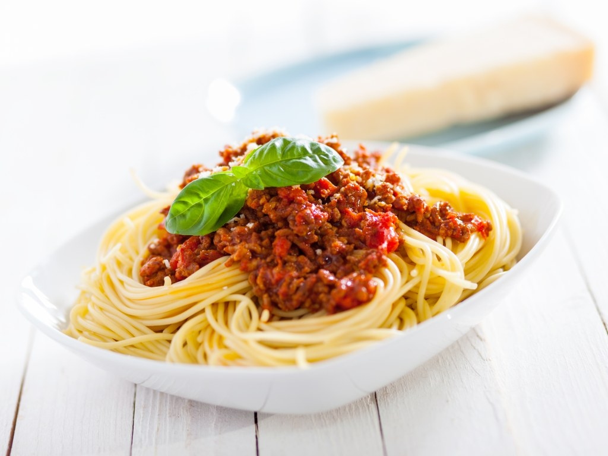
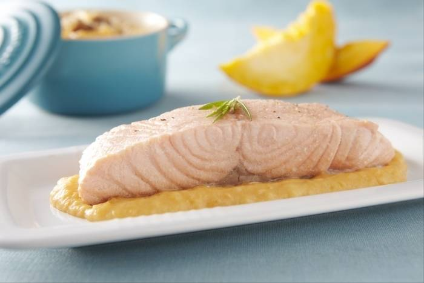
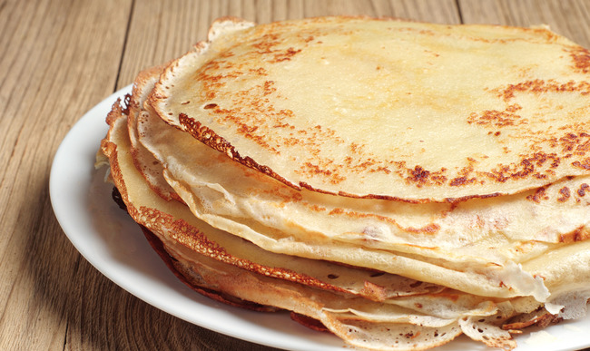

<ion-app>
  <div class="ion-page" id="main-content">
    <ion-header>
      <ion-toolbar>
        <ion-title>Mes Recettes favories</ion-title>
        <ion-buttons slot="start">
          <ion-back-button defaultHref="tab1"></ion-back-button>
        </ion-buttons>
        <ion-buttons slot="primary">
          <ion-button routerLink="/parametre">
            <ion-icon name="settings-outline"></ion-icon>
          </ion-button>
        </ion-buttons>
      </ion-toolbar>
    </ion-header>
    <ion-content class="ion-padding">
      <ion-card routerLink="/gnocchis">
        
        <ion-card-header>
          <ion-card-subtitle>Difficultée: Moyen</ion-card-subtitle>
          <ion-card-title>Gnocchis</ion-card-title>
        </ion-card-header>
        <ion-card-content>
          Très souvent, on se fait une montagne des gnocchi maison. Pourtant, ce
          n'est pas si compliqué à cuisiner... Si vous avez un reste de purée
          ... Lire plus
        </ion-card-content>
      </ion-card>

      <ion-card>
        
        <ion-card-header>
          <ion-card-subtitle>Difficultée: Facile</ion-card-subtitle>
          <ion-card-title>Spaghettis bolognaise</ion-card-title>
        </ion-card-header>
        <ion-card-content>
          Régressives et gourmandes, on ne se lasse jamais des spaghettis à la
          sauce bolognaise... Cuisinez-les en suivant à la lettre cette recette
          !
        </ion-card-content>
      </ion-card>

      <ion-card>
        
        <ion-card-header>
          <ion-card-subtitle>Difficultée: Facile</ion-card-subtitle>
          <ion-card-title>Saumon vapeur</ion-card-title>
        </ion-card-header>
        <ion-card-content>
          Cette recette vous est présentée par Dominique Boute, nutritionniste
          et fondateur de monregimeperso.fr Le saumon vapeur est ... Lire plus
        </ion-card-content>
      </ion-card>

      <ion-card>
        
        <ion-card-header>
          <ion-card-subtitle>Difficultée: Facile</ion-card-subtitle>
          <ion-card-title>Crêpes</ion-card-title>
        </ion-card-header>
        <ion-card-content>
          Ma recette facile et rapide de pâte à crêpes facile à réaliser pour un
          résultat excellent. Elles sont légères, parfumées, bien dorées et peu
          sucrées (ce qui permet ... Lire plus
        </ion-card-content>
      </ion-card>
    </ion-content>
  </div>
</ion-app>
